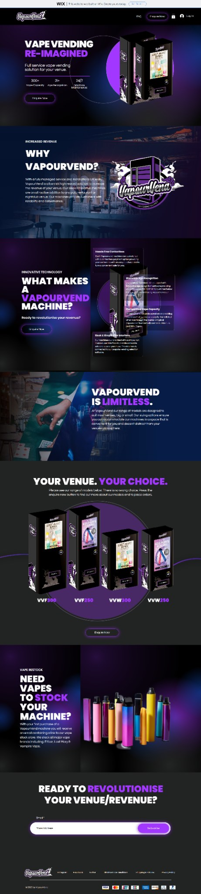

The challenge

← Back to Work
Ecommerce
VapourVend
A large catalogue can create the strange problem of having plenty to sell while making it harder for customers to choose.
Platform usedEcommerce platform not recorded
Project typeEcommerce
The story behind the build
A broad catalogue becomes a problem when customers have to work too hard to understand it.
VapourVend had plenty of product choice. The design challenge was making that range feel broad without allowing it to feel chaotic.
I focused the work on product discovery: stronger category structure, consistent browsing patterns and purchase actions that behave predictably throughout the store.
The point was not to reduce the number of products. It was to reduce the effort required to navigate them.
What I changed
- Strengthened category and product discovery.
- Kept category behavior consistent across the store.
- Made purchase actions predictable.
- Reduced unnecessary visual competition around products.
Where it ended